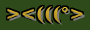
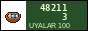

Club of hunters and fishermen of Nurzhan · since 1988, on the Internet since 2006
| Month | Fishing | Hunting |
| March | sazan and crucian on the channels, after the ice | closed |
| April–May | spawning: NO nets, only one rod from the shore | closed |
| June–August | sazan, catfish (som) at night, marinka in the Chu above Boz-Korgon | closed |
| September | the best month for sazan | duck from 15 September |
| October–November | pike-perch on the reservoir | duck, pheasant from 1 Nov, hare |
| December–February | ice fishing at Aral if the ice is 10 cm | hare, fox (licence) |
Remember: the zone along the border and the oil fields east of the city is closed. Do not go to the channel at Kum-Aryk, there is gas.
